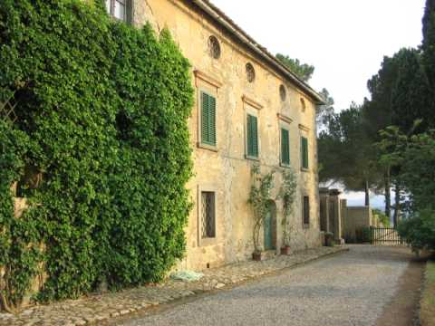
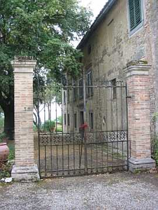
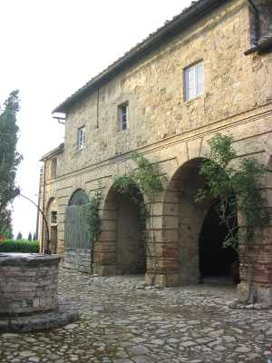
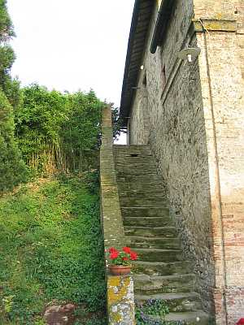

Quercegrossa (Ricordi e memorie)
CAPITOLO I - LUOGHI E PODERI
(CASTELLARE)
Cliccami per ritornare all'Indice poderi
Vai all'Indice dei Capitoli
CASTELLARE
Facente parte probabilmente, secondo alcune ipotesi, del sistema difensivo che faceva capo al Castello di Quercegrossa, il Castellare potrebbe esser nato proprio negli anni di edificazione del castello, sulle terre acquistate dal Comune di Siena. Ridotto in seguito a casa colonica e successivamente a fattoria con la costruzione della villa, controllava anche il podere del Molinuzzo ed era compreso nella parrocchia di S. Stefano, poi di Basciano e solo dal 1884 passò a Quercegrossa. Posto nel comune di Monteriggioni, il Castellare è accessibile da un bivio a circa un chilometro da Quercegrossa, sulla sinistra dopo Macialla; bivio che immette in un suggestivo viale a cipressi, in strada diritta, percorsa la quale per duecento metri ci ritroviamo con a sinistra la fattoria e la villa.


La facciata della villa del Castellare esposta a nord e il lato sud che dà sul giardino.
La prime notizie che ci vengono date risalgono al 1319, dalla Tavola delle Possessioni, e poi da un contratto di mezzadria dell’anno 1354. Tra Cinque e Seicento è proprietà della famiglia Barbucci, con Giovanni e poi Armenio. Intorno al 1630 sembra che la proprietà venga divisa e una parte passa alla famiglia Fondi mentre i Barbucci sono presenti ancora per tutto il Seicento. A metà secolo è proprietario il chirurgo Fondi e il 12 ottobre 1686 Adriano del fu Mariano Fondi, notaro senese, muore nella sua villa detta del Castellare. La famiglia Fondi conserva la proprietà ancora per decenni e si deve arrivare al 1770 circa per trovare il Franchi padrone per pochissimi anni perché già nel 1774 sono subentrati i Vannini. Intorno al 1812/13 nuovo passaggio di proprietà a Luigi Pacchiani e al figlio Ansano che tengono il bene per circa trent’anni per passarlo poi a Wagner Enrico di Giorgio il 14 agosto 1846. Ma, trascorre appena un anno, che ecco acquistare la proprietà Isidoro Guidi di Guido l’11 ottobre 1847. Egli trasmette la fattoria ai figli Guido e Gregorio nel 1863 e nel 1882 la casa risulta assegnata a Cesare Paronchi. Alla morte di Guido, avvenuta il 16 aprile 1888, passa tutto a detto Cesare Paronchi, ma nel settembre dello stesso anno la proprietà ritorna in casa Guidi e precisamente alle sorelle Adele nei Franceschini e Argia, figlie di Gregorio. Le sorelle evidentemente non riescono a mantenersi il bene ereditato perché nel 1902 il Castellare viene aggiudicato per pubblico incanto a Cateni Emilio fu Lodovico e da lui, alla sua morte in data 30 maggio 1910, per successione passa tutto alle figlie Cesira, Erminda e Romilda, con la madre vedova usufruttuaria di ¼. Infine dal 1920 Romilda Cateni nei Bindi è l’unica proprietaria.
L’aspetto attuale della fattoria, situata su una modesta altura che va dolcemente declinando a ponente da tre lati, si presenta in due fabbricati separati da un spazio selciato dove sorge il pozzo. Nella costruzione a Est, sotto due alti archi a tutto sesto, si trovano la parata e le stalle cui fanno seguito la cappella e la stanza dei limoni o serra. Nella parte posteriore, alla quale si accede dal viale per mezzo di una scalinata, l’abitazione del fattore. Di fronte a questo fabbricato la casa del contadino addossata alla villa. La villa si innalza su tre piani, ha il suo giardino e al termine di questo la capanna colonica. Già nel 1825 la registrazione catastale comprendeva una casa di 1288 bq. (437 mq.), un capanno, un forno, la cappella di 140 bq. (47 mq.) e la capanna. La casa è detta casa padronale ed è l’unica abitazione che ospita il padrone, il casiere e il contadino ed è probabile che siano stati i Pacchiani e restaurarla e trasformarla tanto da essere chiamata successivamente Palazzo e poi
Villa. Anche gli altri edifici, che si presentavano separati, vengono successivamente accorpati in una unica struttura con l’aggiunta di ambienti e due abitazioni compresa quella del fattore, guardanti a Est. Già nel 1824 appare la "nuova pigione Pacchiani", non registrata nel catasto del 1825.
Per quasi tutta la sua storia conosciuta, il Castellare è stato sede di un contadino e più pigionali, fino a quattro, variando comunque il dato secondo le proprietà. Tra gli antichi mezzadri vissuti al Castellare, in nuclei familiari di 8/12 persone, sono da ricordare Piero di Giovanni Battista Becatti nel 1592, la cui famiglia è presente ancora nel 1630, Anton Maria Vannucci nel 1611 e i Quercioli residenti per un ventennio a fine Seicento. Il 19 gennaio 1634 vi muore il padrone Armenio Barbucci di 65 anni, e dieci anni più tardi il di lui genitore, l’anziano Fortunio, dato di 95 anni. A fine Settecento si segnalano i Contri per circa vent’anni, Agnese, vedova Cappelli, con 14 persone nel 1786; Pasquino Buti con sedici bocche, poi Cioni, Morelli, Migliorini, Lucchesi, Petrazzi. Per chiudere i Riccucci, Masiero, l’ultimo contadino, e il pigionale Giuseppe Brogi, ma l’ultimo ad abitarvi è stato l’operaio agricolo Gino Rossi. Si rammentano nel Novecento anche i fattori Porciani e Cappelli.


L'ingresso ai servizi agricoli nel corpo staccato dalla villa che comprendeva anche la cappellina del Castellare (vedi Storia religiosa) e le scale che conducevano all'abitazione del fattore posta a ridosso degli stessi in direzione est.
Ambienti di servizio con la cappellina dedicata alla Madonna del Buonconsiglio
Capitolo successivo Castello
Inizio pagina
Vai all'Indice dei Capitoli
|